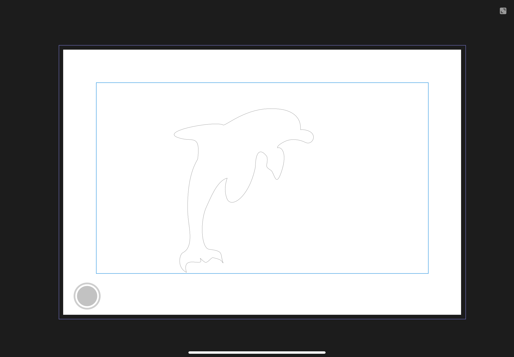
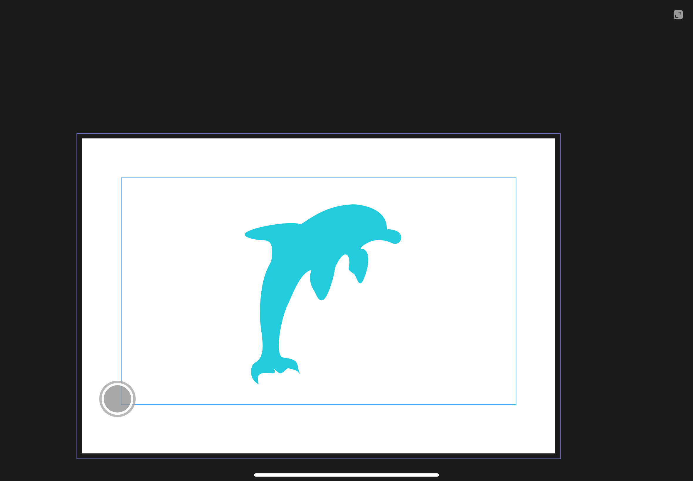
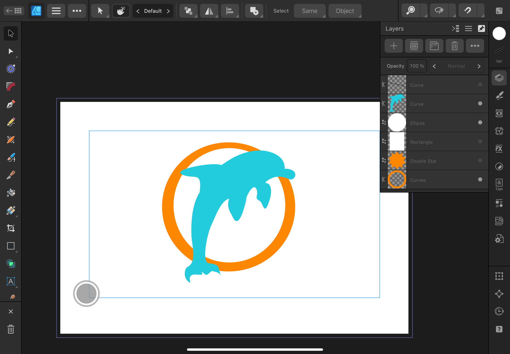
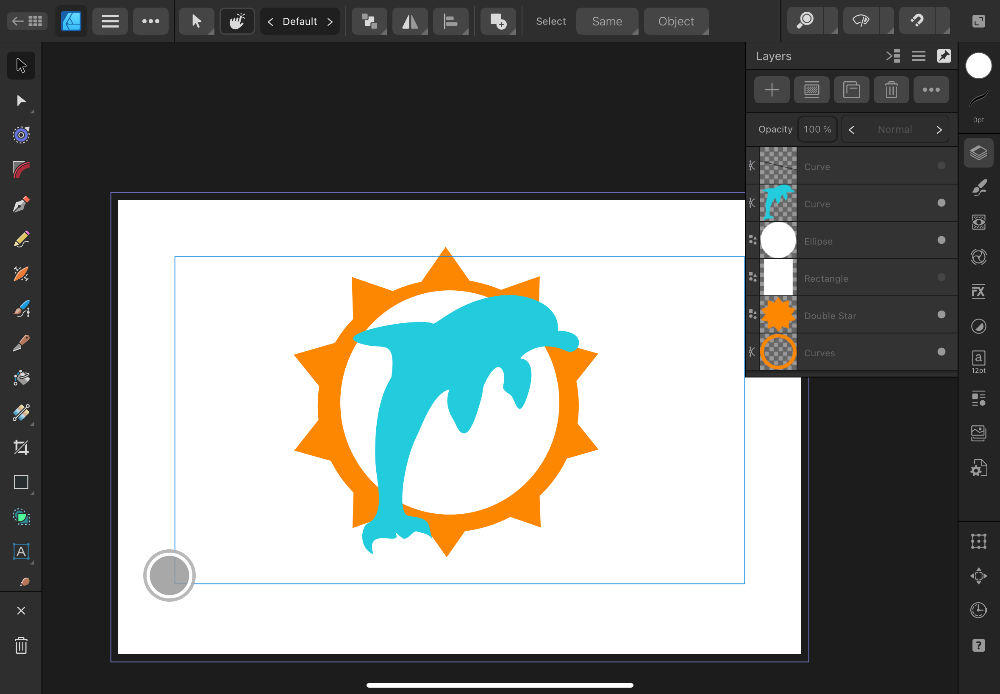
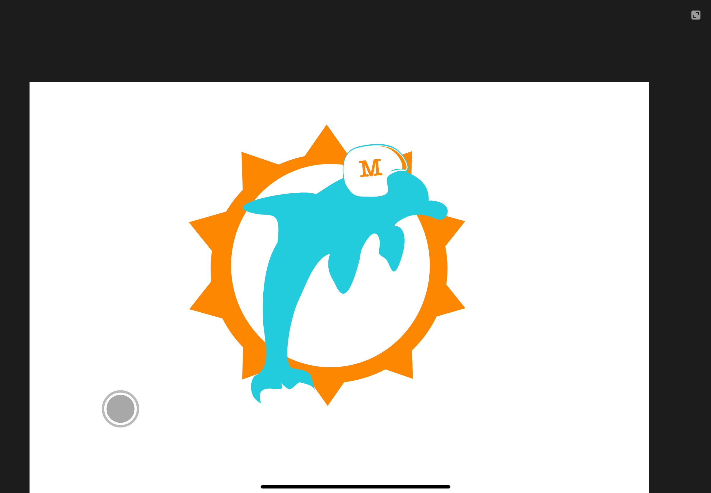
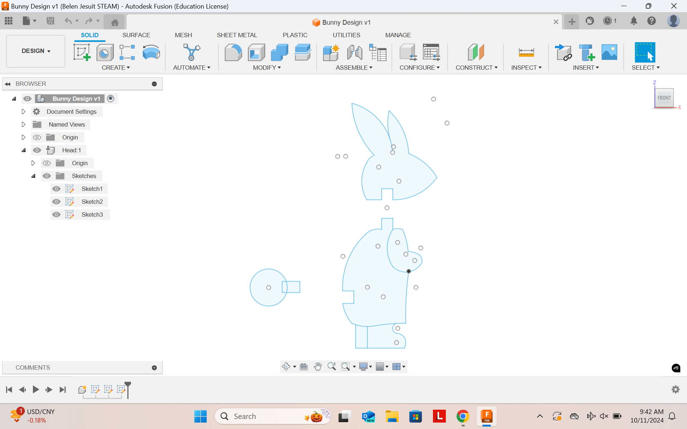
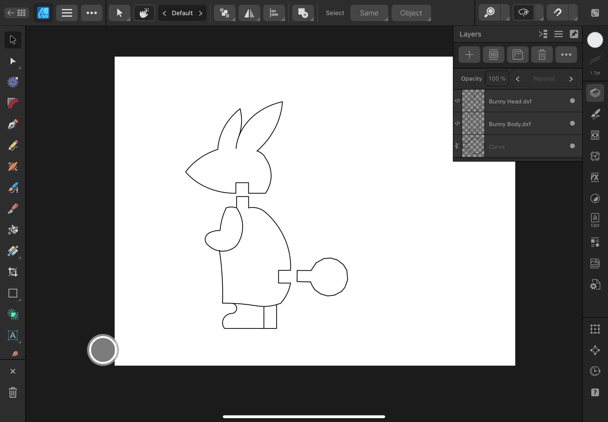

Vinyl Cutter
The vinyl cutter allows for the creation of stickers with multiple colors and layers. My design was a replica of the old Miami Dolphins logo. I am a big fan of the team, and of the multiple throwback items. This sticker was handrawn on Afinity Designer 2 nad uses mutliple colors on different layers. The base layer is white, the second layer is orange, the thrid layer is aqua, and the final layers is the white helmet with the decorations.
    Laser Cutter
Using a laser cutter, a 3D puzzel will be created. The puzzel I created is a simple bunny with three peices, the head, body, and tale. I was inspired by a disney charcter named Thumper when I was reseacrhing for possible deisgns. The process for creating was first doing intial sketches on the program Fusion 360. These sketches were then trasnfered on to Afinity Designer nad readjsuted for the final cut.
 